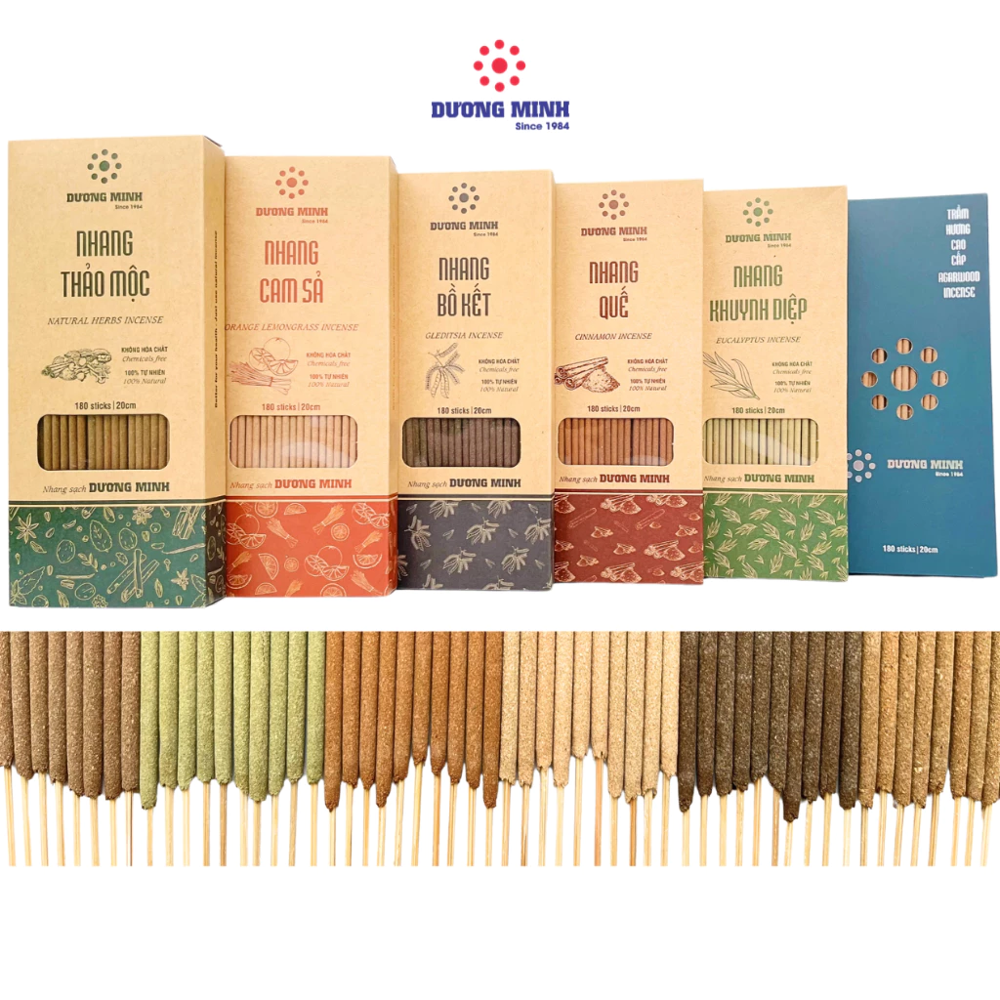

Hương sạch Dương Minh nhang ngắn 20cm 30cm nhang sạch 100% thành phần tự nhiên
51.000₫

Nhang Gừng Mộc Thảo An Hương thơm dịu | Nhang thơm thờ cúng
50.000₫

Nhang Khuynh Diệp Thiên Nhiên (1KG) Hương Thơm Đậm Mùi - An Toàn -Sức Khỏe, Giúp Xua Đuổi Côn Trùng!
51.401₫

Nhang khoanh trầm hương sạch xông nhà, hương vòng thơm dịu nhẹ THIÊN MỘC HƯƠNG hộp 40 khoanh
79.000₫

NHANG VÒNG TRẦM BẮC THƠM SẠCH ÍT KHÓI XÔNG NHÀ, Nhang Vòng Cháy 1 ngày, 3 ngày hương trầm Ngự Ân
130.000₫

Lư Xông Trầm Hương Nhang Vòng Hợp Kim Size 16.5cm - Đế Cắm Nhang Vòng 12h 24h
209.999₫

Nhang sạch hương thảo mộc 1kg mix 2 mùi An An cao cấp 100% thiên nhiên nhang trầm hương, quế, khuynh diệp an toàn
194.000₫

Nụ Trầm Hương Cao Cấp ,Trầm hương đốt thơm phòng nụ trầm hương cao cấp, trầm hương xông nhà tự nhiên
75.050₫

Trầm Hương Cao Cấp Khói Ngược Hương Thơm Dễ Chịu, Không Bị Khét - Nụ Trầm Hương Xông Nhà, Hộp 45 Nụ
159.000₫

Tranh Hoa Sen Đèn Hộp để sau tượng phật, trang trí phòng thờ, spa dưỡng sinh
200.000₫

Cây Lau Nhà Tự Vắt KITIMOP CORAL Mã KTMC-01, Cây Lau Nhà Tự Vắt Thông Minh Xoay 360 Độ, 2 Bông Lau
189.000₫

Bộ Cây Lau Nhà Tự Vắt KITIMOP C6 PLUS-PRO, Thùng Lau Nhà Tự Vắt Thông Minh, Chổi Lau Nhà Xoay 360 Độ, 3 Bông Lau
269.000₫

Túi Rác Tự Phân Hủy - Bao Rác Đen (1 bịch 3 cuộn) Kích Thước Lớn 55cm*65 cm
15.500₫

Túi đựng rác dây rút có quai BOBO chịu lực chịu nhiệt chống thấm nước tự phân hủy
26.460₫

3 Cuộn Túi Rác Tự Phân Hủy bảo vệ môi trường đủ các size Tiểu, Trung, Đại
38.000₫

Chổi nhựa quét nhà Hiwa. Lông chổi mềm, k rụng, quét sạch bụi mịn, vệ sinh được với nước.
53.214₫

Chổi Bông Cỏ Quét Nhà Cán Nhựa Chổi Đót Chít. Siêu Nhẹ Siêu Bền
25.000₫

Chổi Foldabl Gấp quét trong Nhà phù hợp gạch bóng, nền đá
364.000₫